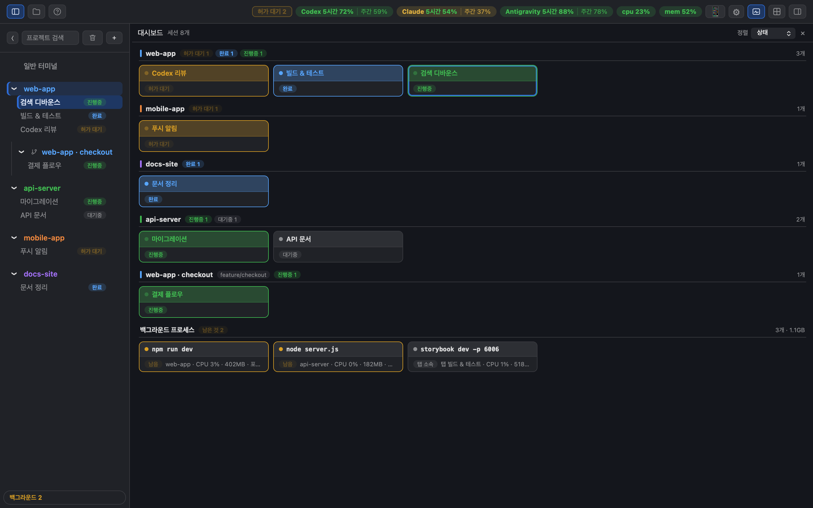
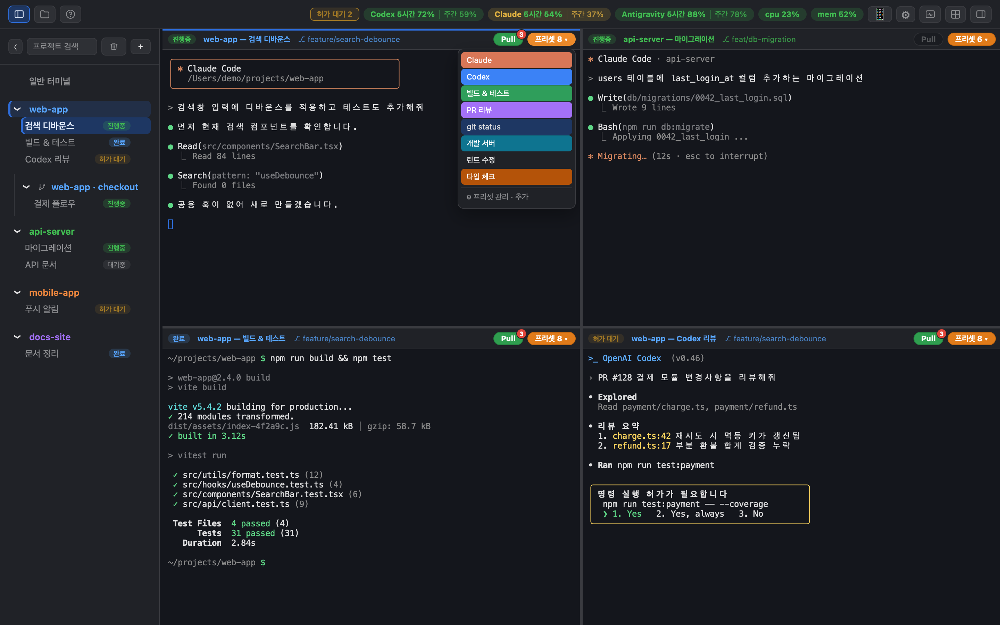
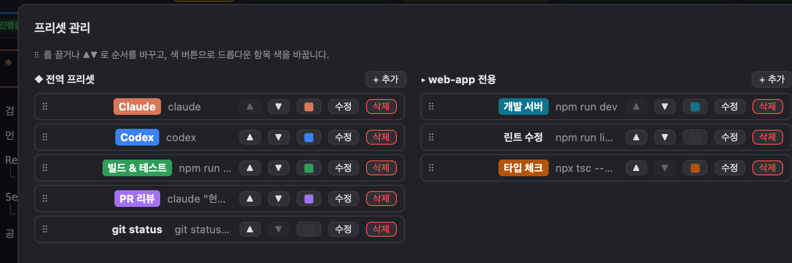
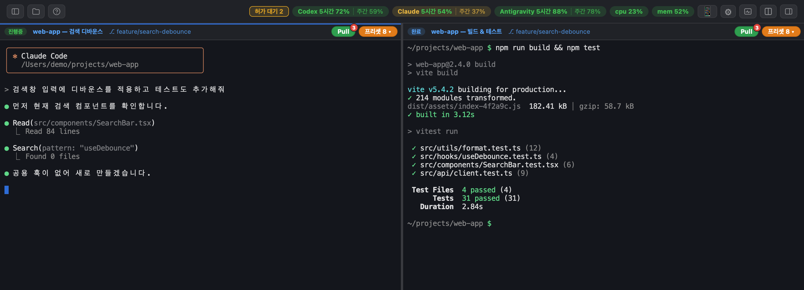
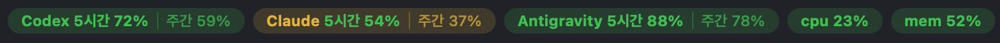
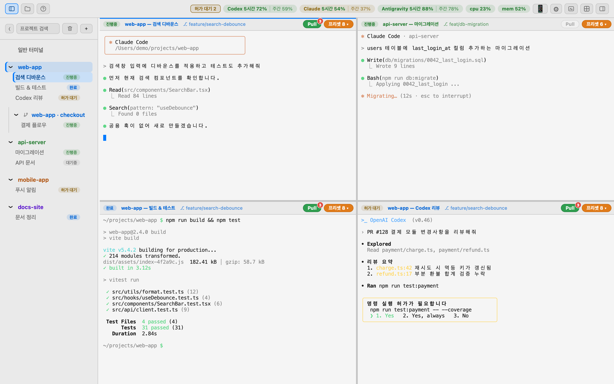
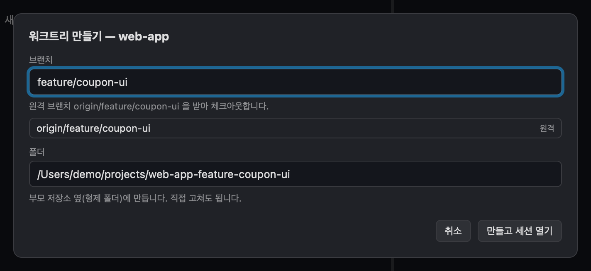
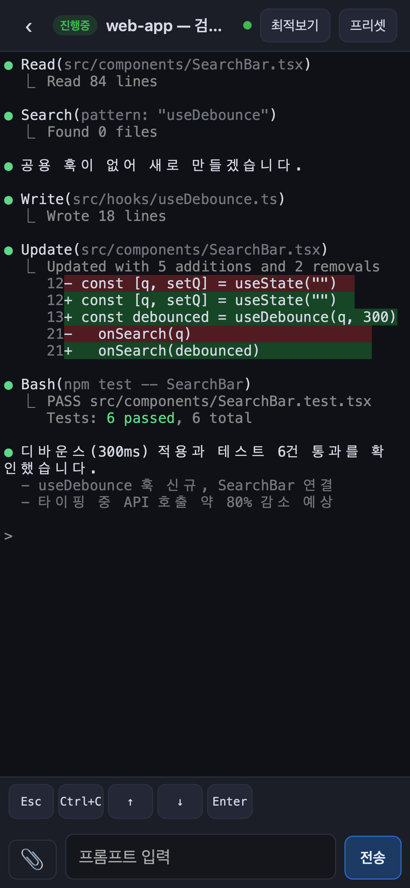

멀티 세션 + 상태 시각화
세션마다 실시간 상태
실행 중(점멸), 대기, 완료(배지 + 데스크톱 알림), 종료됨. 다른 세션을 보고 있어도 백그라운드 작업 완료를 놓치지 않습니다.
- Claude Code 훅이 설치된 세션은
Stop훅 신호만을 완료로 봅니다. 도구 실행 중 출력 공백을 완료로 오판하지 않습니다. - 훅이 없는 세션은 3초 이상 돌던 작업이 5초 이상 조용해질 때 완료로 판정합니다.
오픈소스 · macOS · Windows
Claude Code·Codex 같은 AI 코딩 에이전트를 프로젝트마다 띄워 두세요. 무엇이 돌고 있고, 무엇이 나를 기다리는지 한눈에 보입니다.
무료 · GPL-3.0 · Tauri 2 기반이라 가볍습니다
Features
프로젝트를 등록해 두고 클릭 한 번으로 터미널을 전환하며, 모든 세션의 상태를 놓치지 않습니다.
멀티 세션 + 상태 시각화
실행 중(점멸), 대기, 완료(배지 + 데스크톱 알림), 종료됨. 다른 세션을 보고 있어도 백그라운드 작업 완료를 놓치지 않습니다.
Stop 훅 신호만을 완료로 봅니다. 도구 실행 중 출력 공백을 완료로 오판하지 않습니다.전 세션 대시보드
Cmd/Ctrl+Shift+D 로 모든 세션의 상태를 한 화면에 봅니다. 카드는 프로젝트 단위로 묶이고, 허가 대기·완료가 항상 앞에 와서 내가 개입해야 할 세션을 먼저 보게 됩니다.

명령 프리셋
자주 쓰는 작업 지시를 전역 또는 프로젝트별로 등록하세요. 프리셋마다 드롭다운 배경색을 지정할 수 있고, 프리셋 관리 창에서 순서와 색상을 바꿉니다.


분할 화면
세션을 분할 패널로 배치해 여러 에이전트를 동시에 지켜봅니다. 앱을 다시 켜면 열려 있던 세션이 같은 경로·같은 이름으로, 분할 배치까지 그대로 복원됩니다.

사용량 게이지
Claude Code·Codex 의 5시간·주간 남은 사용량을 상단바에 보여 줍니다. 설치된 도구는 항상 표시하고, 조회에 실패해도 마지막 값을 옅게 유지합니다. 툴팁에서 창별 리셋 시각을 볼 수 있습니다.

테마
다크/라이트 프리셋 12종 중에서 고르거나 배경색·강조색을 직접 지정합니다. 배경 밝기에 따라 글자·상태·프로젝트 색과 코드 하이라이트가 자동으로 보정됩니다.

More
작업 흐름에서 자잘하게 막히던 곳들을 하나씩 메웠습니다.
프로젝트(이름·경로·색상)를 등록해 두고 클릭 한 번으로 해당 경로의 터미널을 열거나 전환합니다. cd 반복 끝.

프로젝트 행의 브랜치 아이콘으로 같은 저장소를 다른 브랜치의 형제 폴더로 펼치고 그 자리에서 세션을 엽니다. 브랜치마다 파일이 분리되어 한 저장소에서 여러 에이전트를 돌려도 작업이 충돌하지 않습니다. 제거할 때는 열린 세션·미커밋 변경·push 하지 않은 커밋을 먼저 확인합니다.
클립보드 이미지를 Cmd/Ctrl+V 로 붙여넣거나 파일을 끌어다 놓으면 PNG 로 저장하고 경로를 자동 입력합니다(Claude Code 가 이미지로 인식). 하단 스트립에서 어떤 이미지를 전달했는지 썸네일로 확인하고, 클릭하면 원본이 열립니다.

폰 브라우저(PWA)에서 세션 상태 확인, 출력 보기, 프롬프트·특수키 입력, 프리셋 실행, 새 세션 열기, 사진 첨부까지. 완료·허가 대기는 ntfy 푸시로 받습니다. QR 페어링 기기별 토큰을 쓰며 기본은 꺼짐입니다.
앱을 다시 켜면 지난번 열려 있던 세션이 같은 경로·같은 이름으로 다시 열립니다. 최근 Claude/Codex 기록이 있으면 '이어서 하기' 배너로 --resume 을 실행합니다.
새 버전이 릴리즈되면 앱이 알려주고 클릭 한 번으로 업데이트합니다. 재시작 후 각 탭의 Claude Code·Codex 를 같은 대화로 자동으로 이어 실행하며, 작업 중이면 끝난 뒤 설치할 수 있습니다. 크래시로 꺼진 뒤에도 같은 방식으로 복구합니다.
탭·앱을 닫을 때 그 세션이 띄운 서버·백그라운드 작업도 함께 종료합니다. 이미 남은 프로세스는 '백그라운드 N' 배지에서 CPU·메모리와 함께 보고 종료할 수 있습니다.
Claude Code·Codex 의 대화 컨텍스트가 기준(기본 Claude 200K · Codex 창의 60%) 이상이면 응답이 끝난 뒤 세션 하단에 오렌지 알림으로 /clear(Codex 는 /new)를 권합니다. 앱은 명령을 대신 입력하지 않습니다.
Getting started
설치하고, 프로젝트를 등록하고, 세션을 열면 끝입니다.
위의 다운로드 버튼 또는 Releases 에서 macOS(.dmg, Intel/Apple Silicon 공용) 또는 Windows(.exe) 설치 파일을 받아 설치합니다.
앱이 서명되지 않아 경고가 뜰 수 있습니다. macOS 는 우클릭 → 열기, Windows 는 SmartScreen 에서 추가 정보 → 실행.
좌측 하단 '+ 프로젝트 등록'을 누르고 폴더를 선택합니다.
사이드바에서 프로젝트를 클릭합니다. 이미 세션이 있으면 전환하고, 없으면 새로 엽니다. 그 안에서 Claude Code 나 Codex 를 실행하세요.
상단 '+ 프리셋'으로 자주 쓰는 작업 지시를 등록하고, 칩을 클릭해 실행합니다.
사이드바의 세션 점 색으로 진행·완료를 확인합니다. 비활성 세션이 끝나면 알림이 옵니다.
| OS | 파일 |
|---|---|
| macOS (Intel/Apple Silicon 공용) | Terminal.Assistance_x.y.z_universal.dmg |
| Windows | Terminal.Assistance_x.y.z_x64-setup.exe |
Manual
macOS 는 Cmd, Windows 는 Ctrl 입니다. 아래에서는 Cmd/Ctrl 로 적습니다.
+ 프로젝트 등록 → 폴더 선택.| Cmd/Ctrl+1~9 | 세션 전환 |
| Cmd/Ctrl+T | 현재 프로젝트에 새 세션 |
| Cmd/Ctrl+J | 터미널 ↔ 프롬프트 입력창 커서 전환 |
| Tab | 분할 모드에서 패널 순회 |
| Cmd/Ctrl+Shift+D | 전 세션 대시보드 (Esc 로 닫기) |
| Cmd/Ctrl+Shift+R | 터미널 화면 강제 재그리기 (글자가 깨져 보일 때) |
| Cmd/Ctrl+P | 우측 패널 접기/펴기 |
| Cmd/Ctrl+I | 프로젝트 사이드바 접기/펴기 |
| Cmd/Ctrl+O | 탐색기 접기/펴기 |
| Cmd/Ctrl+V | 클립보드 이미지 첨부 |
폰 브라우저에서 세션 상태 확인, 출력 보기, 프롬프트·특수키(Esc·Ctrl+C·방향키·Enter) 입력, 프리셋 실행, 새 세션 열기, 사진 첨부를 할 수 있습니다. 기본은 꺼져 있습니다.
spay 를 치면 바로 나옵니다.FAQ
앱이 공증(notarization)되지 않아 첫 실행 때 Gatekeeper 경고가 뜹니다. 앱을 우클릭 → 열기를 선택하면 실행됩니다.
경고 창에서 '추가 정보'를 누른 뒤 '실행'을 선택하세요.
서명 없이 빌드하면 빌드마다 권한 기록이 무효화되어 팝업이 반복됩니다. 공식 릴리즈는 같은 자체서명 인증서로 서명되므로 자동 업데이트 후에도 권한이 유지됩니다. 서명되지 않은 예전 버전을 쓰고 있다면 저장소 README 의 재서명 안내를 참고하세요.
백그라운드 프로세스 정리·표시는 macOS·Linux 에서만 지원하고, Codex 컨텍스트 경고도 macOS·Linux 에서만 동작합니다. 나머지 기능은 두 OS 에서 같습니다.
기본은 꺼져 있고, QR 페어링으로 기기별 토큰을 발급합니다. 다만 평문 HTTP 서버이므로 Tailscale 같은 사설 네트워크 안에서만 쓰고 공개 Wi-Fi·인터넷에 직접 열지 마세요. 기기는 언제든 폐기할 수 있고 30일간 쓰지 않으면 만료됩니다.
Tauri 2 기반으로 시스템 WebView 를 쓰기 때문에 Electron 대비 메모리 점유가 낮습니다.
오픈소스이며 GNU General Public License v3.0 only(GPL-3.0-only)로 배포됩니다. 복사·수정·배포는 GPLv3 조건을 따라야 하고, 파생물도 같은 라이선스와 소스 공개 의무를 유지해야 합니다.
Rust, Node.js 20+ 가 필요합니다(Windows 는 WebView2). 저장소를 클론해 npm install 후 npm run dev 또는 npm run build 를 실행합니다. 자세한 절차는 README 를 보세요.